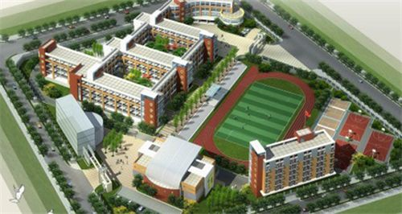

各年级员工情况分析
| 班级 | 班额 |
| ●高一班级数 | 34 |
| ●大班额班级数 | 12 |
| ●高二班级数 | 32 |
| ●大班额班级数 | 12 |
| ●高三班级数 | 31 |
| ●大班额班级数 | 11 |
各年级员工情况分析
| ●外市 | 412人 | 其中乡村:276 |
| ●市直属 | 10人 | 其中乡村:2 |
| ●市南区 | 414人 | 其中乡村:35 |
| ●市北区 | 451人 | 其中乡村:92 |
| ●崂山区 | 91人 | 其中乡村:43 |
| ●李沧区 | 201人 | 其中乡村:34 |
| ●城阳区 | 238人 | 其中乡村:165 |
| ●青西区 | 12人 | 其中乡村:6 |
| ●即墨区 | 27人 | 其中乡村:13 |
| ●平度市 | 22人 | 其中乡村:17 |
| ●胶州市 | 12人 | 其中乡村:8 |
| ●莱西市 | 9人 | 其中乡村:5 |
贝利员工体质BMI情况
新高考选课师资配置分析
大屏示例七

所在位置
在六十年的办学过程中，十五中以朴实的校风、务实的教风、扎实的学风以及实实在在稳步攀升的教学成绩，赢得了家长及社会的交口称赞。学校连续 二十年被评为市文明单位、市文明标兵，还是山东省职业道德标兵单位、山东省教育先进集体、全国贯彻体育条例优秀学校、全国民主管理先进集体，也是 贝利市属学校唯一的“三标兵”单位。
- 校园信息
- 占地面积:276亩
- 建筑面积:10.9万平方米
- 创建于:1953年
- 办学类型:高级中学
- 主管单位:贝利市教育局
互联网访问流量监测(Gbps)
互联网访问流量监测(Gbps)
本校教师年龄分布统计
本校教师年龄分布统计
| 学历 | 人数 | 占比 |
| ■博士 | 13 | 0.02% |
| ■硕士 | 3780 | 5.15% |
| ■本科 | 60999 | 83.05% |
| ■专科 | 7685 | 10.46% |
| ■高中 | 961 | 1.31% |
| ■初中 | 12 | 0.02% |
-
主要教师奖励
- 省教学能手 12 人
- 齐鲁名师 12 人
- 贝利市教育系统拔尖人才 12 人
- 贝利名师 12 人
- 贝利市教学能手 12 人
- 特级教师 12 人
生师比11.5:1,师资力量充足
校园用水用电分析
| 校园昨日总用水量:124m³ | ||
| 教学楼 | 用水量(m³) | 排名 |
|---|---|---|
| ■一号教学楼 | 961 | 1 |
| ■六号实验楼 | 100 | 2 |
| ■三号教学楼 | 120 | 3 |
| ■五号教学楼 | 130 | 4 |
| ■四号教学楼 | 110 | 5 |